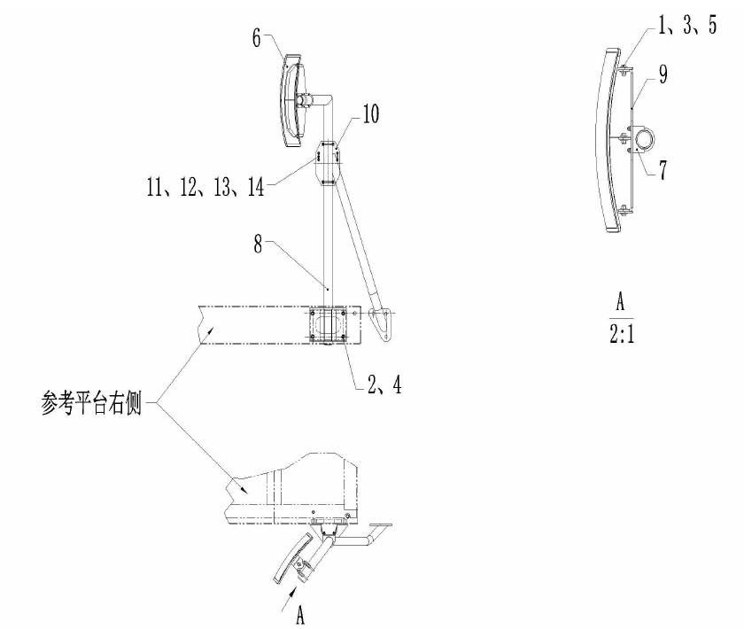
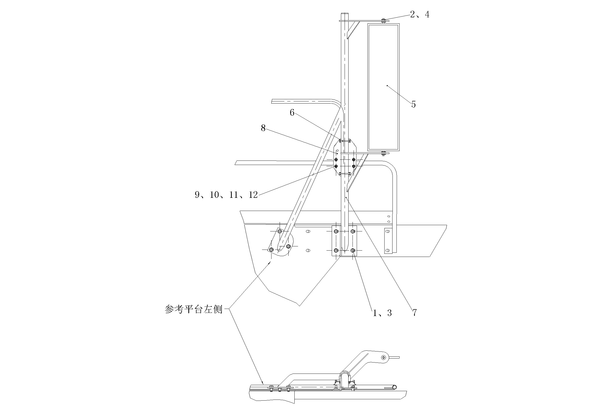

左后视镜安装. · MIRROR MOUNTING LH
Спецификация
1
Болт
4
Пружинная подушка
7
Неподвижный зажим
10
Изогнутая пластина
13
Пружинная шайба
2
Болт
5
Гайка
8
Кронштейн в сборе
11
U - образный болт
14
Гайка
3
Шайба
6
Зеркало заднего вида
9
Кронштейн в сборе
12
Шайба
Рис. 1 Схема установки правого зеркала заднего вида
Спецификация
1.
Болт
4
Резиновая накладка
7.
Кронштейн зеркала
10.
Шайба
2.
Шайба
5.
Плоское зеркало
8.
Изогнутая пластина
11.
Пружинная подушка
3
Пружинная шайба
6
Неподвижный зажим
9
U-образный зажим
12.
Гайка
Рис. 2 Схема установки левого зеркала заднего видаСборка зеркал заднего вида
Описание и расположение
Зеркало заднего вида карьерного самосвала состоит из выпуклого зеркала на правой стороне кабины и плоского зеркала на левой стороне. Правое выпуклое зеркало представляет собой широкоугольный объектив, который обеспечивает водителю широкое поле обзора, левое плоское зеркало может действительно отражать объект за карьерным самосвалом. Оба зеркала заднего вида монтируются на обеих сторонах платформы с помощью стержней зеркального кронштейна (см. рисунки 1 и 2).
Техническое обслуживание и регулировка
Периодическое техническое обслуживание должно включать следующие виды работ:
1. Проверить зеркальное отражение и чистоту зеркала.
2. Проверить резиновую прокладку на наличие повреждений и старения.
3. Проверить, не затянуты ли крепежные зажимы, болты и гайки.
Снятие
1. Использовать подходящий инструмент для снятия крепежных зажимов, болтов и гаек, которые фиксируют левое и правое зеркала заднего вида.
2. Использовать подходящий инструмент для снятия болтов и шайб, которые крепят зеркальный кронштейн, а затем снимите зеркальный кронштейн.
Проверка и ремонт
Зеркала можно проверить следующим образом.
1. Проверьте левое и правое зеркала заднего вида (рис. 1 и 2, поз. 6 и 5) на наличие повреждений.
2. Проверить резиновую (на рисунке 2 номер 4) на наличие повреждений и старения.
3. Проверьте надежность крепления зажимов (рис. 1 и 2, поз. 7 и 6), болтов, гаек.
Установка
Установить левое и правое зеркала заднего вида в обратном порядке разборки.
Кабина –Сборка зеркал заднего вида
020-0120
Дополнения - Масса компонентов
200-0090
2
3
Кабина –Сборка зеркал заднего вида
020-0120
1
Кабина –Сборка зеркал заднего вида
020-0120
См. правую часть платформы
См. левую часть платформы
3
1
4
3、4、5、6、7
Иллюстрации

